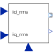
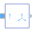
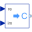

CurrentControllerCurrent controller |

|
Diagram
{kind=link}
Information
This information is part of the Modelica Standard Library maintained by the Modelica Association.
This is a simple current controller.
The desired RMS values of d and q component of the quasi static space phasor current in rotor fixed coordinate system are the inputs id_rms and iq_rms.
Using the given rotor position input phi, the quasi static m phase output currents i[m] are calculated.
The model output can be used to feed a quasi static current source with phase input to supply synchronous machines.
Parameters (2)
| p |
Value: Type: Integer Description: Number of pole pairs |
|---|---|
| gamma0 |
Value: 0 Type: Angle (rad) Description: Offset added to electrical rotor angle |
Connectors (5)
| id_rms |
Type: RealInput |
|
|---|---|---|
| iq_rms |
Type: RealInput |
|
| phi |
Type: RealInput |
|
| I |
Type: ComplexOutput[m] Description: Multi phase current phasors |
|
| gamma |
Type: RealOutput Description: Reference angle of source |
Components (5)
| toGamma |
Type: Gain |
|
|---|---|---|
|  | singleToMultiPhase |
Type: SingleToMultiPhase |
|  | realToComplex |
Type: RealToComplex |
| add |
Type: Add |
|
| const |
Type: Constant |
Used in Examples (3)
|
Modelica.Magnetic.QuasiStatic.FundamentalWave.Examples.BasicMachines.SynchronousMachines Test example: PermanentMagnetSynchronousMachine fed by current source |
|
|
Modelica.Magnetic.QuasiStatic.FundamentalWave.Examples.BasicMachines.SynchronousMachines Test example: PermanentMagnetSynchronousMachine, investigating maximum torque per Amps |
|
|
Modelica.Magnetic.QuasiStatic.FundamentalWave.Examples.BasicMachines.SynchronousMachines Test example: Synchronous reluctance machine fed by current source |